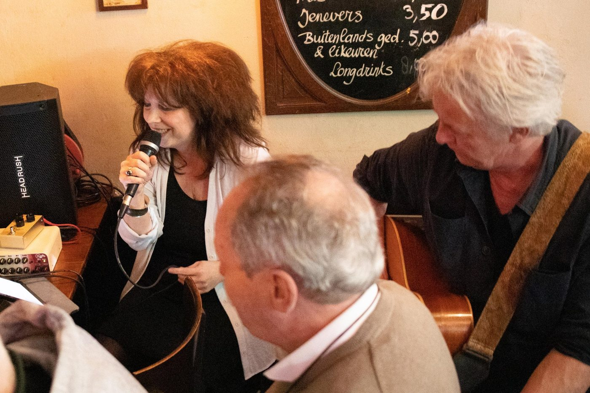
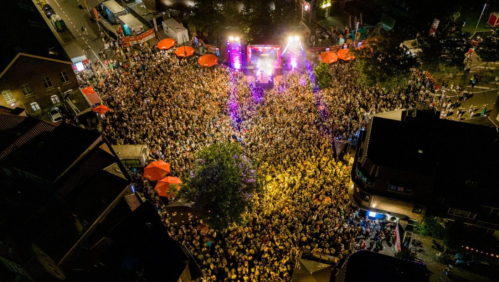

Agenda
Live muziek, meezingen, quizzen en feesten. De toegang is bijna altijd gratis.
Het jaar rond bij Le Petit
Naast de bands organiseren we elk jaar deze avonden. Inschrijven kan aan de bar of met een appje.
Sing and Swing
Januari · zondag vanaf 17:00Geef je favoriete nummer op aan de bar of stuur een appje. Onze gastvrouw zet het op groot scherm.
Carnaval
Februari · vier dagenFeest in ut Kielegat. Op maandag kun je genieten van de grote optocht.
Sing-a-long guilty pleasure
Zomer · zondag vanaf 17:00Stuur je guilty pleasure in en wij zorgen voor de video. Grietje praat de liedjes aan elkaar.
Jáánke meej de Keijzer
Eind augustusHet levensliedfestival met het podium op de Keizerstraat, om de hoek.
BBQ bij Le Petit
September · plek voor 40 personenWees er op tijd bij: inschrijven en betalen vooraf aan de bar bij Ton.
Sinterklaasavond
DecemberDe Sint komt op bezoek. Opgeven kan aan de bar.
Pub quiz en kerstbingo
DecemberDe pub quiz onder leiding van Jan Knoop en de kerstbingo met Belinda en José.
Oud en nieuw
31 december · 22:00 tot 06:00Samen een bubbeltje op het nieuwe jaar. Geen kaarten nodig.

Levenslied om de hoek
Twintig jaar lang was hier de Tranen van Van Cooth, met grote namen als Frans Bauer en Corry Konings. Ton was een van de organisatoren.
Sinds 2025 gaat het festival verder als Jáánke meej de Keijzer, met dezelfde opzet: een levensliedfestival aan het Van Coothplein.
Eerder live bij ons
Een greep uit de bands die bij ons speelden.
Tobin Kirk
Oktober 2025Op zijn tour "Where You Are Is Where I'm Going" ook in Breda.
Trio Third-Party
September 2025Groovy second-hand soul, van Etta James tot Al Green.
Cheddar
September 2025Bekend van "Laat gaan!" op BredaNu. Ramses Shaffy, Stef Bos en Pierre Kartner, met een folky bite.
Porto Cabello en 2Harmony
Voorjaar 2025Live muziek op Tweede Paasdag en een meezingmiddag met 2Harmony.
Kom langs
Een vraag, of een feestje of borrel regelen? Stuur een appje of bel even.
Bar Le Petit
Op de hoek van het Van Coothplein en de Keizerstraat.